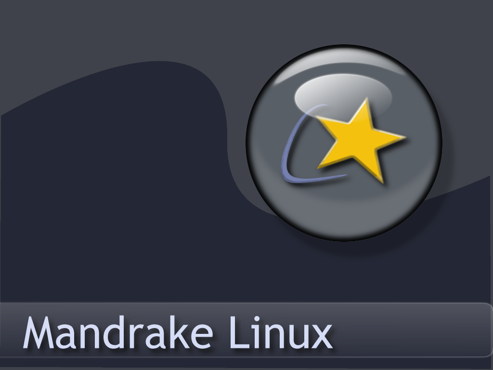
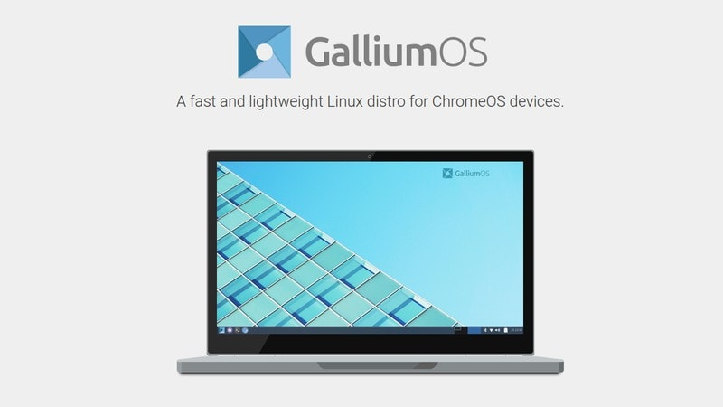

Mandrake
This was the first Linux distro I ever tried. I found it at Wal-Mart. At the time I had a very old computer that my sister and brother-in-law had gifted to me, and I couldn't believe that a whole operating system was available for less than $20! You might be thinking "Wait, I thought it was supposed to be free?" and yes - this happens to be one of the commercial releases. I tried installing it - and it didn't work very well. The biggest problem was the video driver - I could not get it to work. I eventually had to put Windows back on it, and thought the Linux Tux mascot was cute, but forgot about the failed experiment. One positive was that if I hadn't seen it on the shelf, I may never have tried Linux.
Mint
Fast forward 5 years or so later, and I found myself very frustrated with Windows - specifically Windows Vista. It was a massive memory hog, even on a not so old computer (this was a computer sold with the minimum specs needed for Vista, and that's another topic, but this video is very accurate .) I Googled Linux, and found out that Linux was usually FREE. I was confused, since I had paid for it a few years back. I found out that it usually IS free, that a college student named Linus Torvalds in 1991 created the original Linux Kernel, and that by now there were a BUNCH of new distros, all for free, ready to download and try out. Linux Mint was one touted as easy to use and install. I loved it! Even my printer that was unable to work on Vista worked great! I was hooked. I still had to dual-boot Windows for work purposes, but I spent my own time in Linux.

Puppy
Fast forward again, and I had another old donated laptop. It was an old Compaq branded laptop. It also had run on Vista. I wanted to test a Linux distro that was really small and fast. One such distro is Puppy Linux. It has a minimal install, and when I installed it, it made that old laptop run amazingly fast! I was very impressed.
Galleum
I enjoy getting old tech from family members who don't want it anymore, so I got a 2014 Toshiba Chromebook. The software was out of date, as Google no longer updated it. Chromebooks are very good for someone who loves everything Chrome, but I found it was very locked down. I found out that Google actually invested in creating their own Linux distro, Galleum, specifically for Chromebooks. It required having to open it up to take out a write protect screw that allows you to install new BIOS, so that you can install different operating systems. I tried Galleum, but typical of Google, they dropped the project and so it doesn't get updated at all. What I liked about it was that I was able to use it like a regular computer, unlike ChromeOS which is very locked down. It also allowed me to figure out how to flash the BIOS which led me to installing other distros on the Chromebook.
Lubuntu
After installing Galleum on the Chromebook, and seeing that it just wasn't getting updates (and it wasn't all that great actually), I tried the next best Linux distro recommended for it, Lubuntu. It's based on the most popular Linux distro, Ubuntu. I was skeptical, because the Chromebook's drivers were so proprietary - but I gave it a try, and it works great! I love it. All the drivers worked after install, and I made sure to install the newest version, which has full support until 2025. So for the price of my time removing a screw and flashing a new BIOS, this 2014 Chromebook now has new life - with a great screen and battery to boot.